Ein Atelier voller Farbe, Geschichten und Struktur
Seit über 35 Jahren übersetzt Babette Klingenberg Natur, Reisen und Stimmungen in Bilder – von großformatigen Unikaten bis zu liebevollen Illustrationen für Kinder und Erwachsene. Heute ist sie aktiv als Mitglied der Künstlerpalette Unterschleißheim und im Künstlerkreis Neuried. Als Dozentin für Acrylmalerei unterrichtet sie Erwachsene an diversen Institutionen im Raum München.
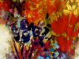
„Die Ausübung der Kunst ist ein großer Teil meines Ichs, es ist mir die Luft, mit der ich atme.“Clara Schumann
Meine Arbeit
Über michMein Beruf ist Grafikerin, aber bereits vor und während des Studiums habe ich mich mit Illustration und Malerei beschäftigt.
Neben meiner Anstellung als Layouterin bekam ich die Möglichkeit, 20 Jahre für einen Verlag in Augsburg wöchentlich Kinderillustrationen anzufertigen.
Durch Malkurse bei der Münchner Künstlerin Eva Großhennig begann das Interesse an Acrylmalerei und Abstraktion.
Später kamen andere Themen wie menschliche Figuren, Landschaften, bis zu pflanzlichen und tierischen Motiven hinzu.
Ein anderer Teil meiner derzeitigen Arbeit sind Illustrationen, die ich für verschiedene Druckerzeugnisse einsetze, wie Jahreskalender, Karten, Tassen, Adventskalender.…
„Inspiriert werde ich von der Beobachtung meiner Umwelt, von Landschaften, Reisen, Stimmungen in den verschiedenen Jahreszeiten.“
In der Vorbereitung bearbeite ich die Leinwand mit verschiedenen Materialien – etwa Sand, Servietten oder Folien.
Dadurch erzeuge ich unterschiedliche Strukturen und Anmutungen, die jedem Bild seine eigene Aussage verleihen.
Die Stile variieren von abstrakt, figürlich, pflanzlich, kubistisch bis hin zu erzählerischen Motiven.
Über Mich
Willkommen in meiner Welt aus Farbe, Struktur und Licht.Bevor ich mit dem Malen beginne, strukturiere ich die Leinwand mit verschiedenen Materialien wie Sand, Servietten oder Folien. So entstehen Bilder mit ganz unterschiedlichen Anmutungen und Oberflächen – jedes Werk erhält seine eigene Tiefe und Haptik.
Meine Malerei bewegt sich zwischen Abstraktion und Figuration. Mich faszinieren architektonische Formen, das Spiel von Licht und Schatten und die stille Begegnung von Menschen im Raum. Schicht für Schicht baue ich meine Bilder auf, bis eine Stimmung entsteht, die den Betrachter einlädt, innezuhalten.
Jedes Bild ist ein Unikat in Acryl auf Leinwand oder Holz, entstanden in meinem Atelier.
Vita
Werdegang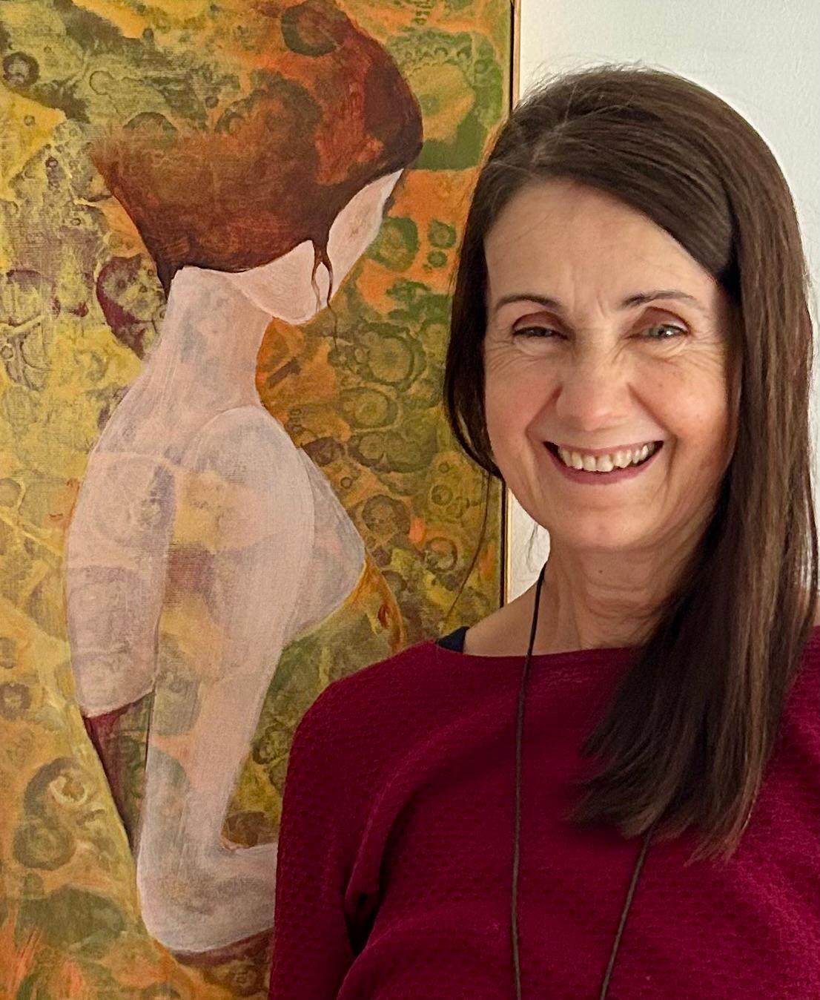
- 1961Geboren in Marburg/Lahn (deutsch-französische Staatsbürgerschaft)
- 1982Abitur, Studium für Kommunikationsdesign (FH Augsburg)
- 1983Studium der Malerei an der Akademie Roederer, Paris
- 1987Diplom für Kommunikationsdesign an der FH Augsburg
- 1988–1992Layouterin und Illustratorin einer Jugendzeitschrift, Weltbild; Signets und Logos für Geschäfte und Firmen
- seit 2003Regelmäßige Einzel- und Gruppenausstellungen
- seit 2004Kurse für Acrylmalerei an unterschiedlichen VHS Institutionen und im ASZ München Solln
- seit 2008Mitglied im Künstlerkreis Neuried aktuell
- seit 2017Mitglied der Künstlerpalette Unterschleißheim (ART, gegründet 1990) aktuell
Malerei
Ob dekorativ, figürlich oder konkret – ich male je nach Stimmung in verschiedenen Genres.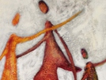
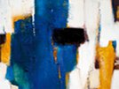
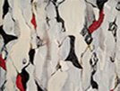
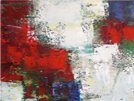
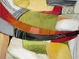
Falls Ihnen eines der Bilder gefällt, fertige ich es gerne nach Maß oder in gewünschten Farben an. Auf Wunsch berate ich Sie mit einer Bildauswahl vor Ort.
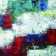
70 × 50 cm
100 × 80 cm
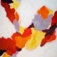
120 × 100 cm
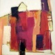
50 × 50 cm
60 × 80 cm
Illustration
Aquarell, Buntstift, Gouache, Tusche und Acryl – für Geschichten, Rätsel und Bastelanleitungen.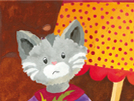
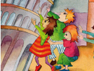
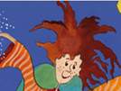
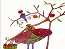
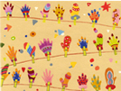
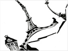
Karten & Kalender
Ich gestalte jedes Jahr einen neuen Jahreskalender, Adventskalender und andere Druckerzeugnisse. Die Themen dafür denke ich mir aus – oft sind es Betrachtungen aus dem täglichen Leben.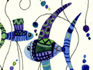
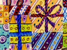
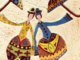
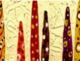
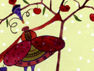
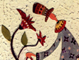
Durch eine große Farbpalette, viele Muster und teilweise schwungvolle Bewegungen der Figuren versuche ich, Leichtigkeit auszudrücken. Mein Anliegen ist es, dem Betrachter ein kleines Lächeln zu entlocken und ihn für einen Moment in eine hoffnungsvolle Welt zu entführen.
Meine Illustrationen – sei es als Klappkarte, Jahreskalender, Rezeptvorschläge oder Mutmachsprüche – können Sie gerne bei mir bestellen. Da sich das Sortiment immer mehr erweitert, informiere ich Sie auf Anfrage auch gerne über die neuesten Erzeugnisse.
E-Mail: info@babette-klingenberg.de · Tel.: 089 / 78 65 80
Ausstellungen
WerkschauKontakt
Babette Klingenberg
Oppenriederstraße 47
81477 München
Tel: 089 / 78 65 80
E-Mail: info@babette-klingenberg.de